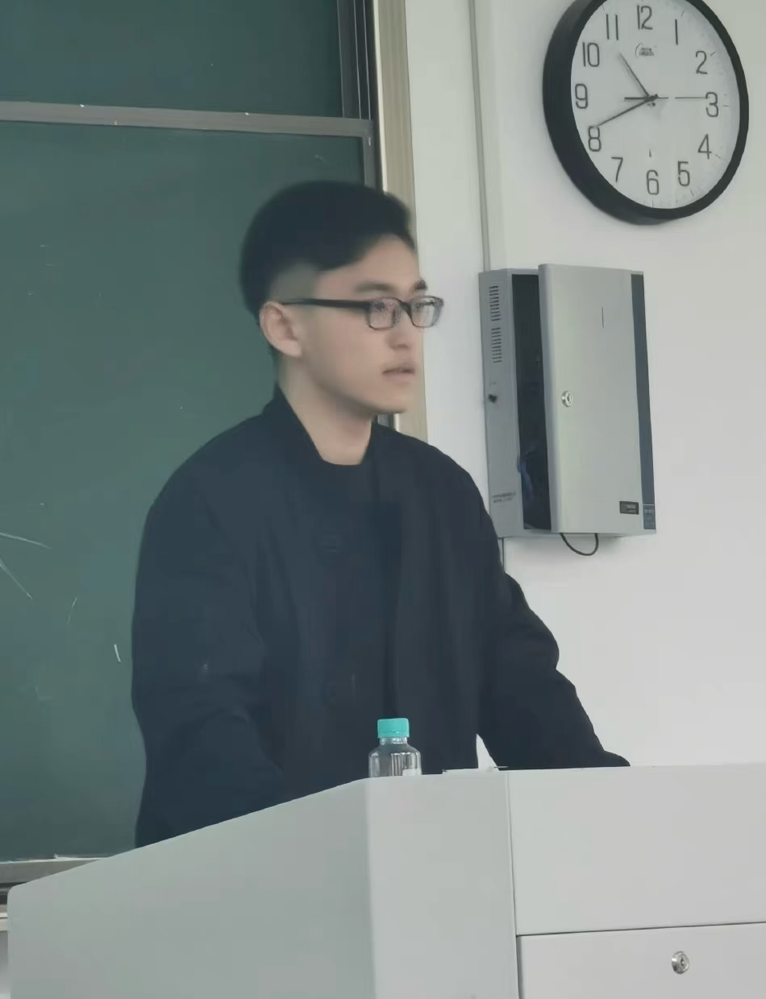

|

|
此个人主页记录了我的教育经历和本人对价值投资的思考。我即将毕业于苏州大学数学科学学院统计系（2019-2023），此外，本科阶段我辅修了计算机科学（2020-2022）的双学位课程。 目前，本人就读于新加坡国立大学理学院，修读应用数学硕士专业（预计毕业年份2024年）。我涉猎广泛，对数学、统计学、计算机科学、投资学、经济金融学有着浓厚的兴趣。由于自己的专业背景较为多元，我认为跨学科的工作更适合自己。 I am broadly interested in value investment and capital allocation. I invest across four major global stock exchanges: China, Hong Kong, the US and Paris. I started my investment career at the age of 19 and opened my personal securities account at the age of 20. I am a firm believer that for value investors like us, time is our friend. I am willing to buy a great undervalued company at a reasonable price and hold its shares for a long term. Holding shares in a company is equivalent to buying into the company itself. So, I define myself as a businessman and investing is doing business across industries, except that the company is run under a manager you trust. Between Sep '19 to Jun '22, I was an undergraduate student at Soochow University. I obtained my Bachelor’s degree in Statistics and a double degree in Computer Science from Soochow University. My native language is Chinese and my second language is English (Fluent). The programming languages and applications in which I am familiar with are: MATLAB, R, Python, LATEX, C, SQL, Lingo, EXCEL, SPSS, SAS. |